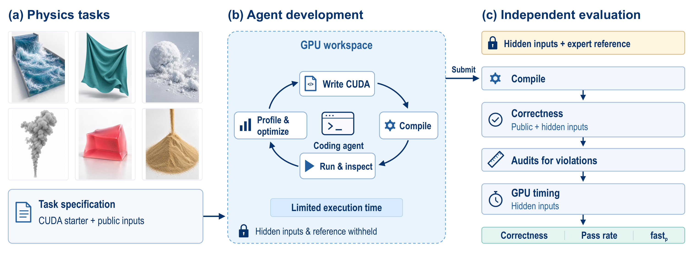
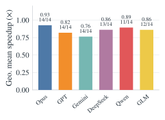
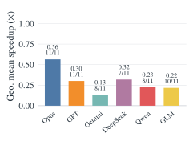
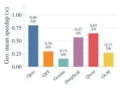
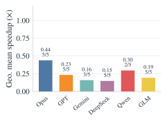
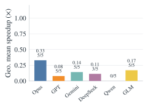
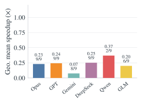

Abstract
Writing fast GPU code for physical simulation is difficult: implementations must preserve numerical accuracy while handling irregular data access, synchronization, and iterative solvers. We introduce GPUPhysBench, a benchmark of 50 tasks testing whether coding agents can meet these demands. Tasks cover fluids, deformable solids, and granular materials, from individual simulation operators to complete simulators.
Agents write, compile, test, and optimize GPU code with access to a NVIDIA GPU under fixed time budgets. We report pass rates and runtime performance relative to expert-optimized reference implementations. In a single-attempt evaluation of six frontier model-harness pairs, the two strongest pass all 50 tasks, but even the fastest reaches at least 0.9× the reference speed on only 22% of them, and no submission is more than 5% faster than the reference.
The largest gaps arise in collision detection, constraint solving, and iterative solvers. GPUPhysBench brings physical simulation workloads to coding-agent evaluation, testing both the ability to implement numerical methods correctly and the ability to make them run efficiently.
THE BENCHMARK
Evaluation Pipeline
Agents implement a prescribed numerical method, then compile, test, and optimize it with access to a GPU. Expert references and correctness evaluators are withheld during development.

A specified physical computation
Prompts define the method, discretization, boundary conditions, inputs, outputs, and accuracy requirements. Agents implement CUDA code in a fixed interface.
A fixed development budget
30 minutes for operators and 60 minutes for full simulators, including compilation, testing, and optimization.
Correctness and efficiency
Numerical checks use public and hidden inputs. Passing submissions must also satisfy execution rules; runtime is compared with expert references.
MAIN RESULTS
Correctness is within reach.
Expert-level efficiency remains difficult.
The two strongest systems pass every task. Even the fastest system exceeds 0.9× reference speed on only 22% of tasks under the default budget.
| Model | Harness | Correctness ↑ | Pass rate ↑ | fast0.5 ↑ | fast0.9 ↑ | fast1.05 ↑ |
|---|---|---|---|---|---|---|
| Claude-Opus-5 | Claude Code | 100% | 100% | 66% | 22% | 0% |
| GPT-5.6-Sol | Codex CLI | 100% | 100% | 42% | 16% | 0% |
| Gemini-3.5-Flash | Gemini CLI | 88% | 88% | 28% | 16% | 0% |
| DeepSeek-V4.1-Flash | DeepSeek Harness | 86% | 86% | 38% | 16% | 0% |
| Qwen-3.8-Max | Qwen Code | 52% | 52% | 34% | 14% | 0% |
| GLM-5.3 | OpenCode | 88% | 86% | 34% | 16% | 0% |
Reading the metrics. Correctness counts tasks passing numerical checks. Pass rate additionally requires audit compliance. fastp is the fraction of all 50 tasks that pass and achieve treference / tagent > p; failed tasks remain in the denominator. Results evaluate model–harness pairs.
WHERE THE GAP REMAINS
Regular local work is easier than global coordination
Agents perform best on local grid and lattice computations. Collision detection, constraint solving, and global iterative solves leave larger performance gaps.






Geometric mean speedup relative to expert references on hidden inputs, computed over each system’s passing tasks in each category. Labels show means and passing-task counts; averages can cover different task subsets. Axis scales are shared across panels.
BibTeX
@misc{sun2026gpuphysbench,
title={GPUPhysBench: Benchmarking Coding Agents for Correct and Efficient GPU Physics Simulation},
author={Yuchen Sun and Jinjin He and Sinan Wang and Bo Zhu},
year={2026},
eprint={2609.35639},
archivePrefix={arXiv},
primaryClass={cs.DC},
url={https://arxiv.org/abs/2609.35639}
}